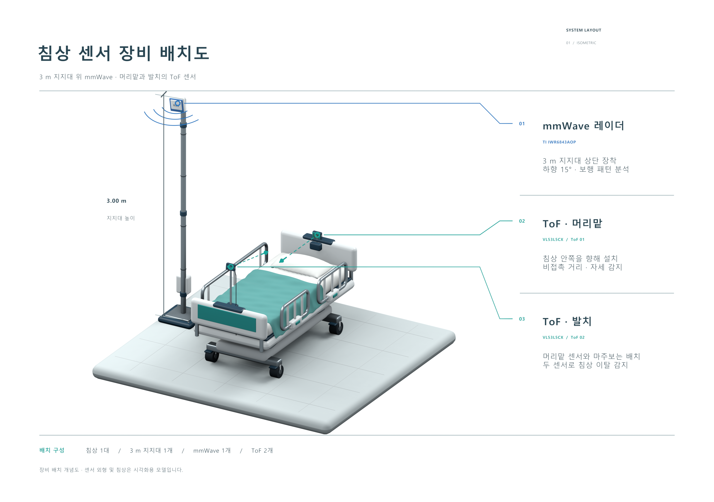
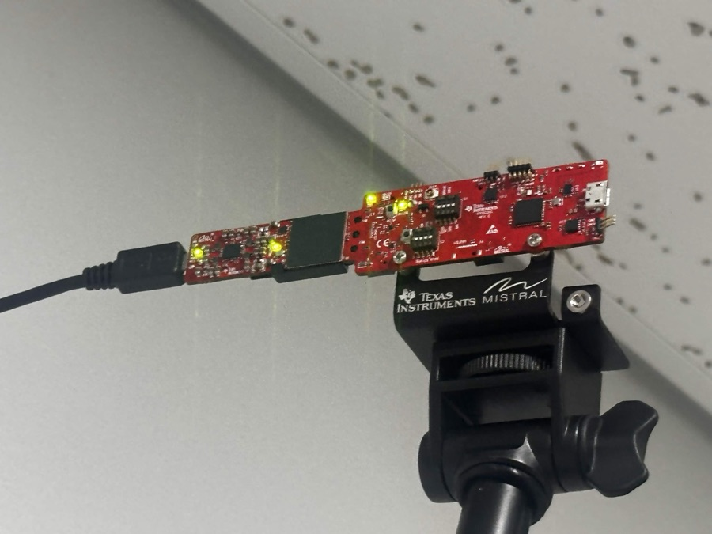
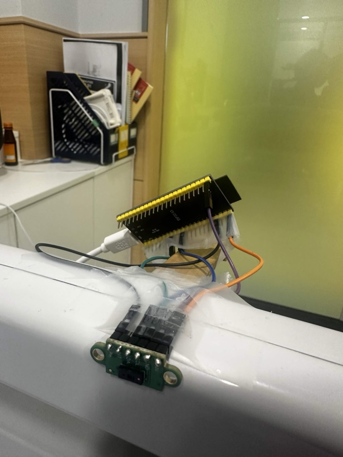
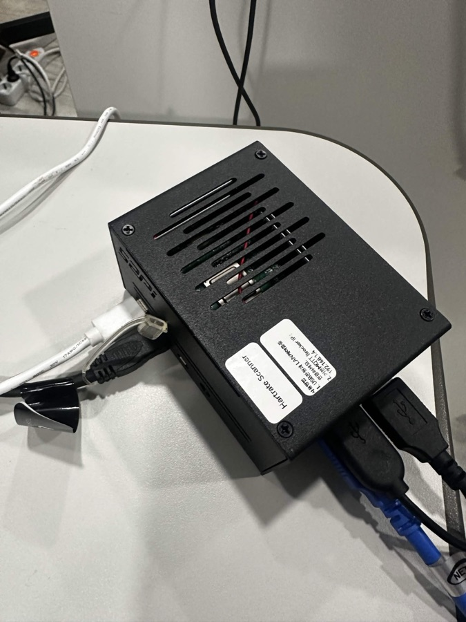
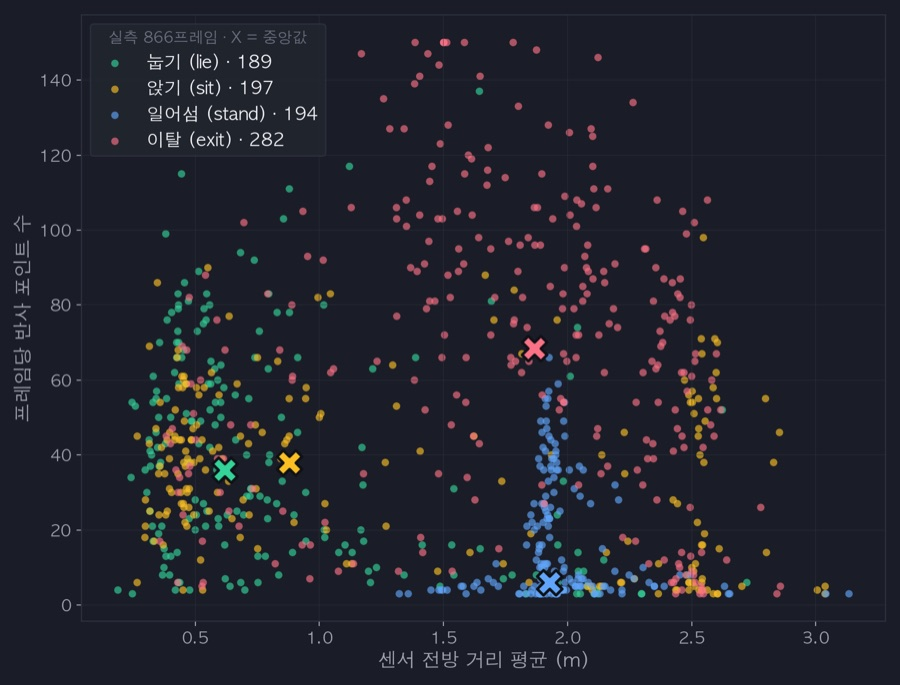
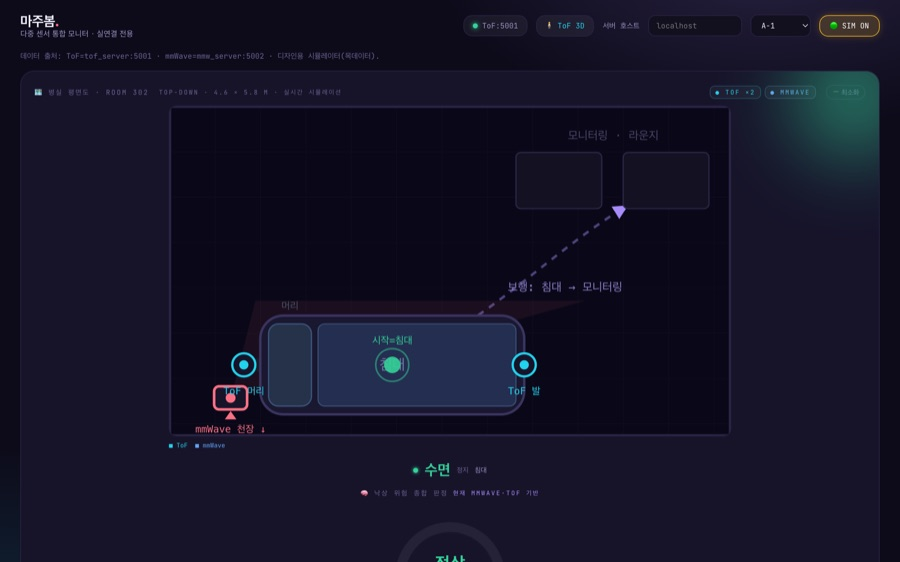

비접촉 센서융합 기반
치매환자 낙상예측시스템
비접촉식프라이버시 보호낙상 예측
기술개발 배경
01 · 빈도
10건 중 4건
국내 요양병원 낙상사고 중
치매 환자 비율 (39.3%)
치매 환자 비율 (39.3%)
02 · 문제
낙상으로 인한 사망
고관절이 골절된 고령자 3명 중 1명은
1년 안에 사망합니다
1년 안에 사망합니다
03 · 영향
사회적 비용 증가
낙상 사망으로 인한 비용
연간 1조 2500억원
연간 1조 2500억원
개발 목표착용·촬영 없이 낙상 예측을 하여 예방
출처: 국내 요양병원 최근 4년(2021–2024) 낙상사고 분석 — 치매군과 비치매군 비교 (KCI)
기존 방식과의 차이
기존 방식
제안 기술
웨어러블치매 어르신의 인지 저하로 지속적 착용 어려움 · 임의 제거
접촉→비접촉
비접촉 센싱침대 주변 설치 · 착용 불필요
카메라고령자 사생활 침해
영상→비영상
비영상 센싱거리·위치 데이터만 수집
압력 매트(단일 센서)센서 하나로는 감지할 수 있는 상황이 제한적
단일→복합
복합 센서ToF와 mmWave를 결합해 다양한 상황을 감지
시스템 구성

01
설치
요양병원 1인실
침대 주변
침대 주변
→


02
측정
비접촉 센서 2종
mmWave · ToF
mmWave · ToF
→

03
처리
Raspberry Pi 5
병실 내 수신 · 저장 · 분석
병실 내 수신 · 저장 · 분석
→

04
분류
자세 분류 · 보행 Z-score
위험도 4단계
위험도 4단계
→

05
확인
간호사 대시보드
위치 · 자세 · 위험도
위치 · 자세 · 위험도
ToF 센서 ST VL53L5CX · 침대 위
측정 원리
적외선이 반사되어 돌아오는 시간으로 거리 측정
측정 사양
8×8 멀티존FoV 65°최대 4 m
판단 항목
거리 측정
센서와 고령자 사이의 거리를 측정
자세 분류
Random Forest · 6클래스
빈 침대 · 바로 누움 · 좌측 누움 · 우측 누움 · 앉음 · 걸터앉음
빈 침대 · 바로 누움 · 좌측 누움 · 우측 누움 · 앉음 · 걸터앉음
침상 이탈 감지
고령자가 침대에서 벗어난 상황을 감지
mmWave 레이더 TI IWR6843AOP · 침대 밖
측정 원리
60–64 GHz 전파의 반사 신호로 사람의 위치·움직임 추적
측정 사양
시야각 120° × 120°설치 높이 3m하향 15°
판단 항목
위치 추적
x·y 좌표로 위치와 이동을 실시간 추적
보행 분석
보행 지표 6종 산출 → 보행 속도·속도 변동·좌우 흔들림·정지 비율·추정 보폭·보폭 변동
낙상 감지
신체 높이 1.2 m 이상 급강하 → 즉시 위험
개인 기준 보행 평가
mmWave 산출
보행 지표 6종
- 보행 속도
- 속도 변동
- 좌우 동요
- 정지 비율
- 추정 보폭
- 보폭 변동
Z-SCORE · 환자 개인 기준
Z = (현재 값 − 개인 평균) ÷ 개인 표준편차
위험도 4단계 · S = Σ|Z|
정상
S < 3
주의
3 ≤ S < 6
경고
6 ≤ S < 9
위험
S ≥ 9
보행 구간만 기준에 반영 · 초기 14일은 기준 구축 기간
간호사 대시보드
화면 구성
위치 · 자세 · 위험도를 한 화면에 표시
주요 기능
실시간 위치
병실 평면도 위 환자 좌표
위험도 분류 근거
위험도와 위험 단계를 알린 센서 표시
기록 조회
이벤트 기록 · AI 종합 리포트
AI 종합 리포트 기록과 논문 근거를 읽기 쉬운 설명으로
01
환자 기록 모으기
현재 센서 판정 · 최근 24시간 활동
투약 · 위험 요인 · 직전 리포트
02
관련 논문 찾기 RAG
등록 논문 73편에서 검색
의미 검색 + 키워드 검색 결합
03
AI가 리포트 작성 LLM
모은 기록과 찾은 논문으로
15개 항목 리포트 작성
리포트 주요 항목담당자 검토용
현재 상태와 변화
자세 · 보행 · 활동 · 이전 기록과 비교
위험도와 위험 요인
위험도와 환자의 위험 요인 설명
관련 연구 근거
검색된 논문의 내용과 출처 정리
추가 관찰 사항
더 살필 변화와 부족한 정보 표시
평소 상태와의 변화를 분석해 위험 점수를 계산→AI가 위험 요인과 관찰 사항을 설명
시연 영상
현장 영상과 센서 대시보드 동기 재생
누운 자세